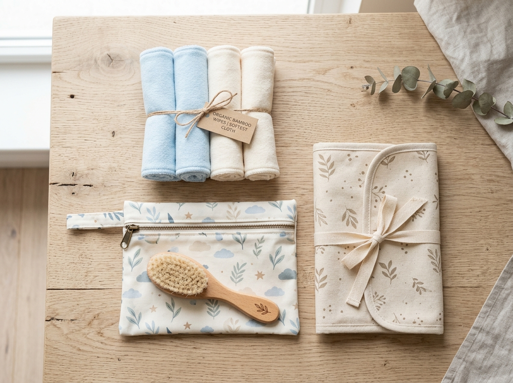
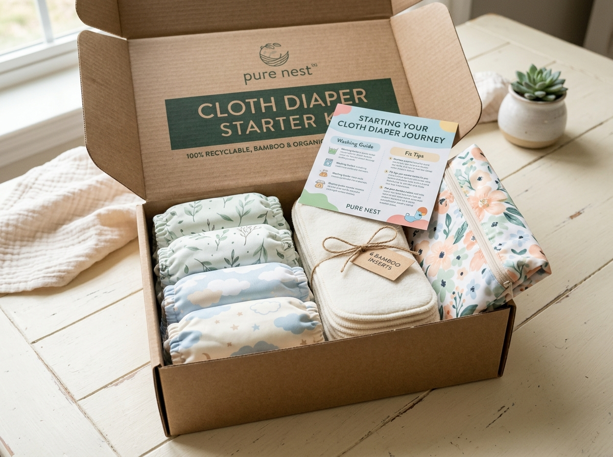
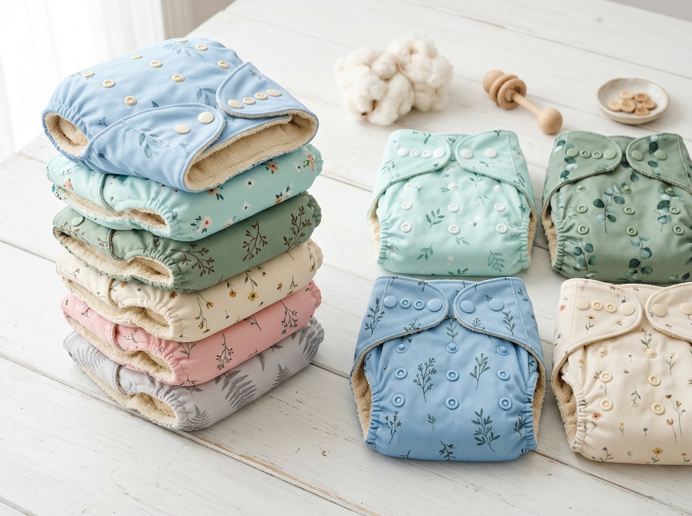
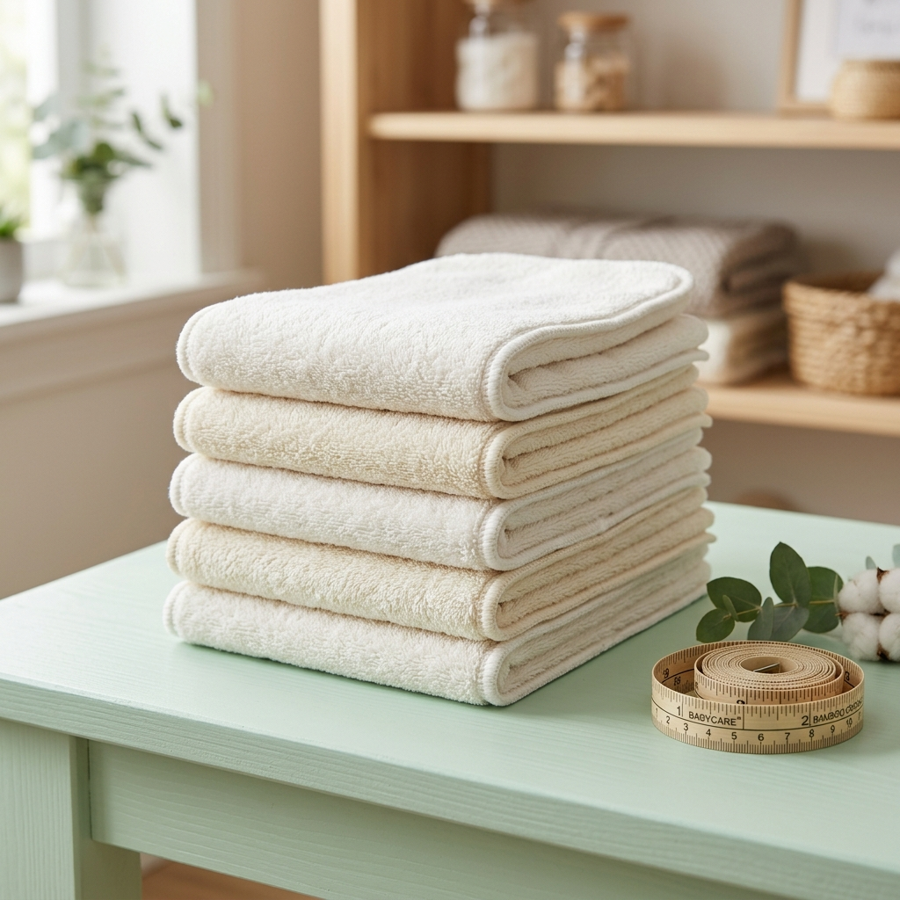
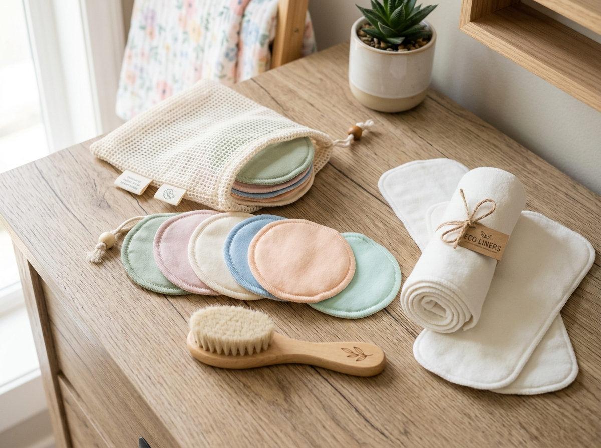
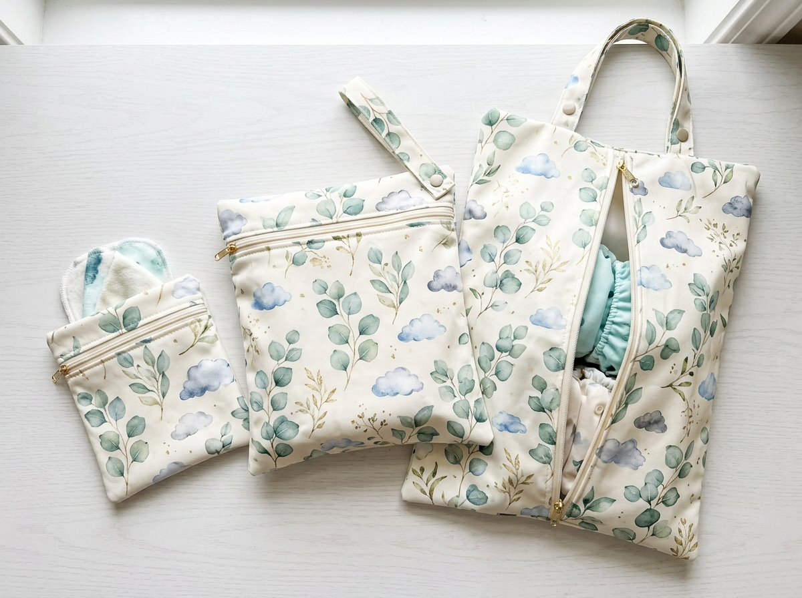

The Sustainable
Reusable Parenting Journal
Evidence-based wash routines, diaper cost calculators, insert stacking guides, and candid advice from experienced Australian families navigating reusable care.

Cloth Diapers and Reusable Wipes: A Simple Daily Routine
Pairing modern cloth diapers with washable bamboo wipes is the single highest-impact swap you can make. Here is our step-by-step daily workflow for pre-wetting wipes, storing soiled items, and washing together in one 2-step machine cycle.
Read Routine GuideHelpful Guides for Reusable Baby Care
Real solutions to everyday baby care questions written by experienced cloth diapering parents:

Essentials Guide10 Reusable Baby Products Every New Parent Should Know
Beyond cloth diapers: discover how bamboo wipes, washable nursing pads, silicone bibs, burp cloths, and wet bags save time, money, and landfill space.
Read Guide
Stash PlanningHow to Build a Reusable Baby Care Kit: From Newborn to Toddler
A stage-by-stage guide to curating the perfect collection of diapers, wipes, boosters, and wet bags tailored to your family's laundry rhythm.
Read GuideReusable Baby Products That Save Money Over Time: The Real Math
We calculate the exact lifetime cost of single-use disposable diapers, wipes, and paper products vs one-off washable stashes. The math will surprise you.
Read Guide
Laundry ScienceHow to Wash and Store Reusable Baby Essentials (Diapers, Wipes & Bibs)
The unified 3-step washing routine that lets you clean diapers, bamboo wipes, drool bibs, and nursing pads in the same drum with zero fuss.
Read Guide
Mother CareWashable Nursing Pads: Why Bamboo Beats Disposable Plastic Every Time
Why sore postpartum nipples love organic bamboo velour. How to avoid scratchy disposables and wash pads easily in a mesh laundry bag.
Read Guide
Daycare TipsThe Essential Guide to Wet Bags: Daycare, Swimming & Stroller Outings
How dual-zipper waterproof wet bags trap moisture and odors. Why educators love them and how to clean them so they last for years.
Read GuideThe Nursery Wash & Reusable Care Cheat Sheet
Designed by pediatric health nurses and cloth diapering parents. Tape this 1-page visual guide right above your washing machine or changing table for foolproof washing routines, temperature guides, and fabric care.
Short warm cycle with 1/2 detergent dose. Flushes out 95% of soiled water and prepares textiles for deep sanitizing.
Long heavy wash with full detergent dose. Sanitizes fibers, removes sweat oils, leaves diapers squeaky clean.
Hang covers in shade, line dry bamboo inserts in sunshine for natural stain elimination.
Which Reusable Baby Care Kit Matches Your Routine?
Answer 4 quick questions about your baby's age, whether you are trying reusables part-time or full-time, and get a tailored kit recommendation.
Take the 60-Second Stash QuizFrequently Read Topics
Quick answers to our most searched reusable parenting topics:
Yes! That is one of the greatest time-savers of modern reusable baby care. They all go into your airy dry pail and wash together in your regular 2-step warm machine cycle.
Hanging clean damp wipes and burp cloths in natural sunlight for 2–3 hours naturally breaks down pigments and stains without needing chemical bleaches!